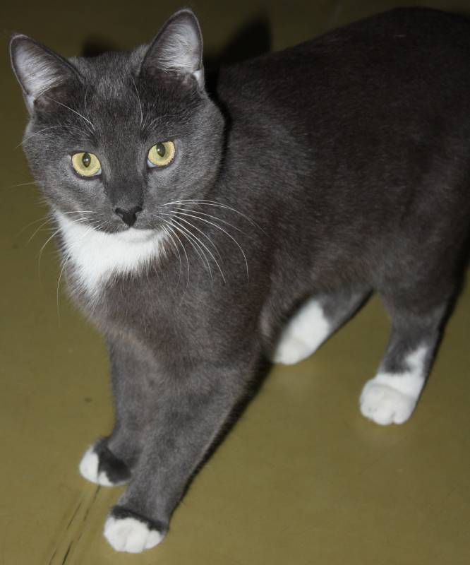
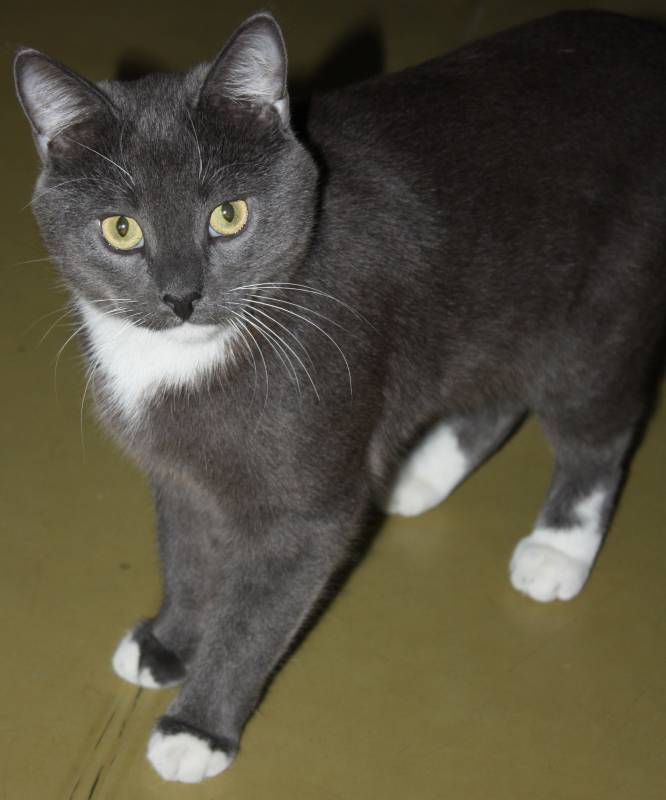

Она живет в приюте "Свет Маяка", где заботятся о бездомных животных. Однако недавно у Белолапки возникли серьезные проблемы со здоровьем, и ей срочно требуется наша помощь.
Белолапка была найдена на улице с переломанными лапами после аварии. В приюте ей оказали первую помощь, но для полноценного восстановления необходима серьезная медицинская помощь, которая стоит дорого. Кошке требуется операция, лечение и реабилитация, но приют ограничен в средствах и не в состоянии покрыть все расходы.
Без нашей помощи Белолапке грозит ампутация лап, что серьезно ухудшит ее качество жизни. Она такая милая и ласковая кошка, и мы не можем оставить ее на произвол судьбы.
Мы вместе можем изменить жизнь Белолапки к лучшему. Существует несколько способов, как мы можем оказать помощь этой кошке:
Нам необходима ваша помощь, чтобы спасти жизнь этой прекрасной кошки. Давайте вместе сделаем доброе дело и подарим Белолапке шанс на новую жизнь!
Помните, что каждое действие имеет значение, и вместе мы можем сделать мир лучше для наших маленьких четырехлапых друзей. Благодарим вас за внимание к судьбе Белолапки и надеемся на вашу поддержку. Давайте вместе спаcем жизнь этой чудесной кошки! 🐾
 
